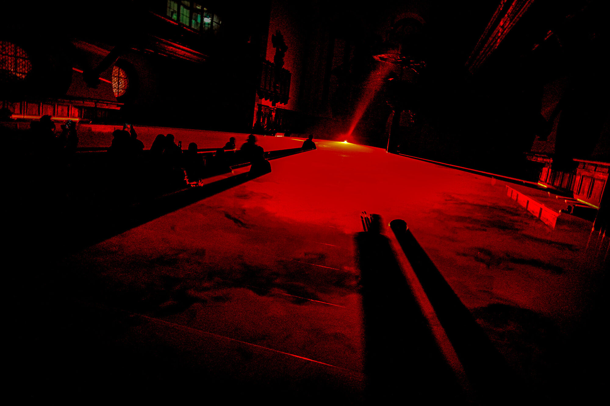
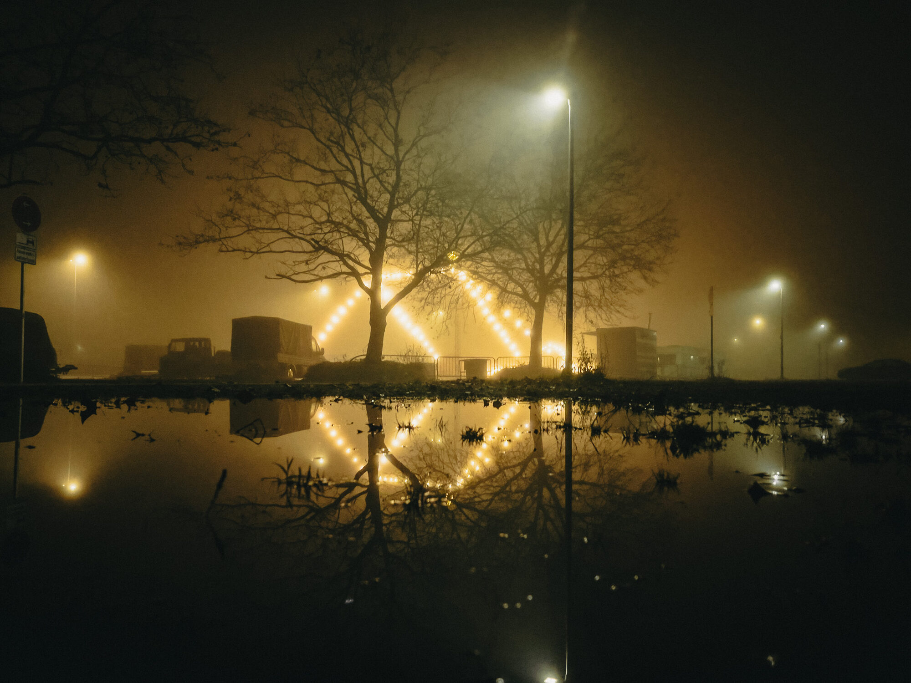

Effekt 2 — Interaktion
Der Cursor als Lichtkegel
Die Galerie liegt zunächst gedämpft im Dunkeln. Wo dein Cursor hinfährt, erwachen die Bilder in voller Farbe und Schärfe — wie ein Spot im Fotostudio. Neugierig machend, ohne kitschig zu sein.
Maus über die Bilder bewegen


